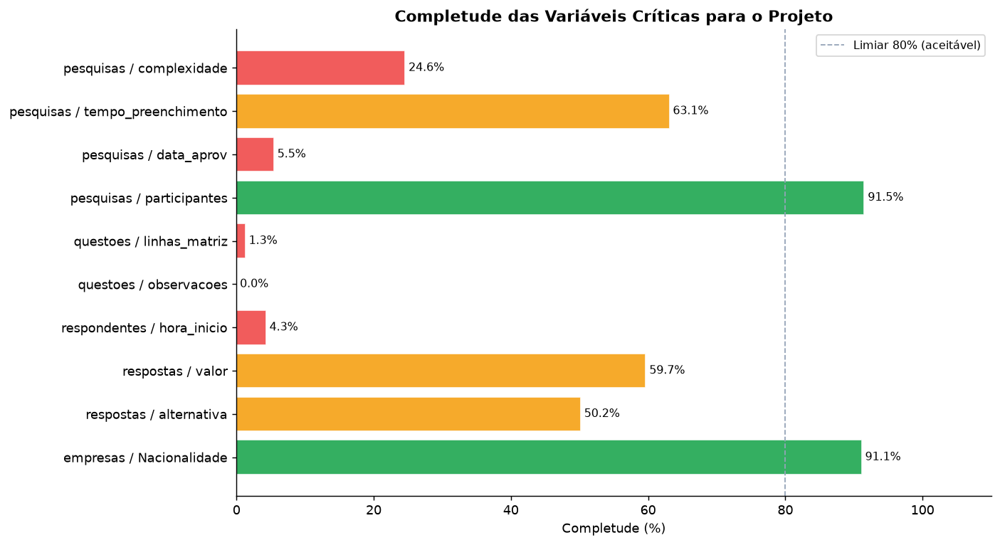
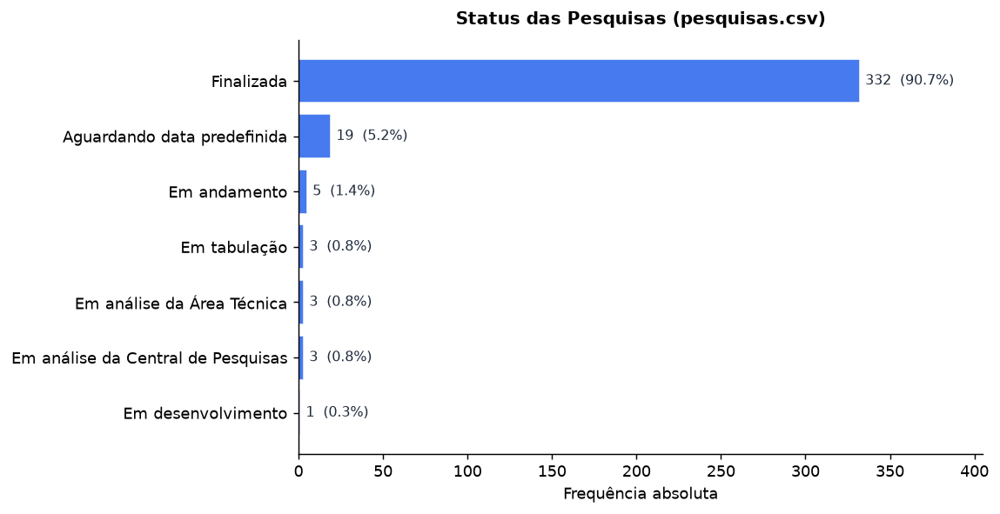
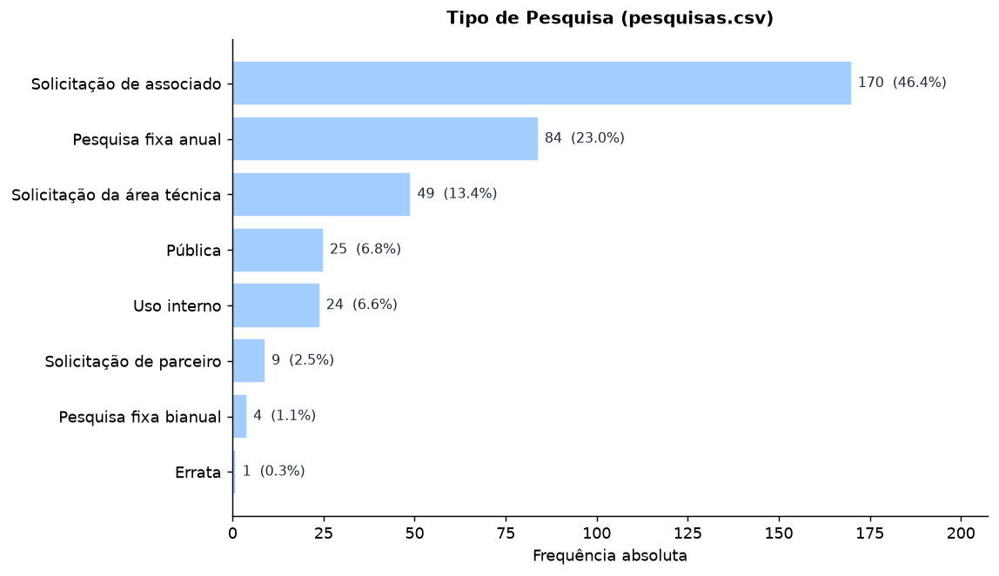
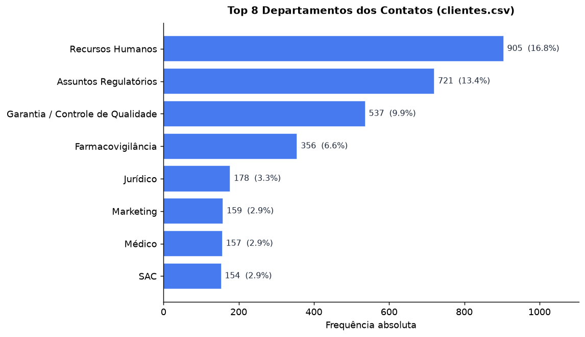
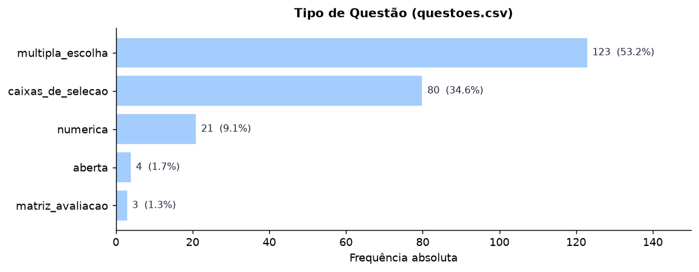
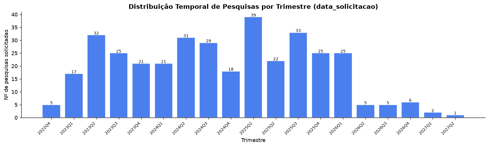
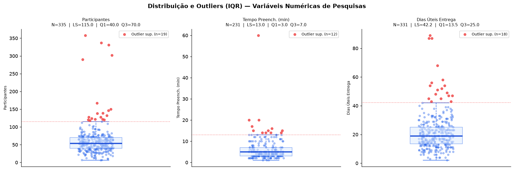

Modelagem Quantitativa dos Dados do Parceiro Sidusfarma¶
Este relatório consolida a leitura quantitativa das 6 bases relacionais do parceiro com foco em qualidade de dados, estrutura analítica, indicadores e viabilidade dos relatórios previstos no artefato. As bases brutas analisadas estão em DADOS/, os cálculos são reprodutíveis a partir dos scripts em scripts/data_quality/, scripts/metrics/ e scripts/runners/, os resultados persistidos desta análise estão em docs/data/, e a auditoria segue critérios do DAMA-DMBOK 1.
0. Resumo Executivo¶
| Escopo | Valor |
|---|---|
| Bases auditadas | 6 |
| Registros analisados | 46.148 |
| Colunas analisadas | 75 |
| KPIs materializados | 41 |
| Lacunas relevantes | 12 |
| Reports avaliados | 12 |
| Diagnóstico executivo | Status | Detalhe |
|---|---|---|
| Qualidade dos dados | Média | completude geral de 77,61% e 3 relações com órfãos |
| Viabilidade analítica | Alta | maioria dos reports é executável com a base atual |
| Pontos fortes | Forte | volume, adesão, perfil, acervo e tendência |
| Pontos de atenção | Atenção | prazo/SLA detalhado, complexidade, etapas intermediárias |
| Prioridade imediata | Alta | saneamento das lacunas e tratamento dos órfãos |
| Decisão executiva | Leitura rápida |
|---|---|
| Avançar agora | reports de produção, comparativo temporal, perfil, engajamento e acervo |
| Avançar com ressalva | prazo/SLA detalhado e benchmark semântico por pergunta |
| Aprofundar nos detalhes | Inventário das Bases, Lacunas, Integridade Referencial e Indicadores |
1. Contextualização Quantitativa¶
1.1 Processo Representado¶
As bases de dados representam a operação ponta a ponta da Central de Pesquisas Setoriais do Sidusfarma: o fluxo que começa com o cadastro de empresas farmacêuticas e seus contatos executivos, passa pela solicitação, elaboração e lançamento de pesquisas setoriais, e termina na tabulação de respostas e divulgação dos relatórios consolidados ao setor. A principal unidade de análise adotada neste relatório é o registro de participação (respondentes.csv), porque ele conecta uma empresa a uma pesquisa específica e sustenta os principais indicadores de adesão e engajamento do modelo relacional.
1.2 Decisões que Podem Ser Apoiadas por esta Análise¶
As bases já permitem apoiar decisões práticas do parceiro, tanto no desenho das pesquisas quanto na gestão operacional da Central.
- Planejamento do catálogo anual: com 170 pesquisas de "Solicitação de associado" e 84 "Pesquisas fixas anuais", o portfólio é majoritariamente endógeno; isso ajuda a definir quais temas devem entrar no calendário recorrente.
- Revisão do tamanho dos questionários:
tempo_preenchimentotem mediana de 5 minutos e máximo de 60 minutos; questionários muito longos podem ser revistos quando o objetivo for elevar adesão ou reduzir atrito. - Priorização da base associativa: a adesão sobre a base total é 53,79%, mas sobe para 68,35% quando o universo passa a ser apenas as associadas; isso muda a estratégia de relacionamento e cobrança de participação.
- Instrumentação do processo de coleta:
hora_inicioehora_terminoestão praticamente vazios; sem isso, o parceiro não mede abandono, horário de pico nem tempo real de resposta por participante. - Melhoria do controle operacional:
complexidade,data_aproveprorrogada_ateexistem, mas o uso é inconsistente; isso limita análises de gargalo e SLA e indica necessidade de padronização no sistema de origem.
1.3 Inventário Estrutural das Bases¶
O inventário completo das 6 bases, com todas as colunas, exemplos de 3 linhas por dataset e ligações possíveis entre as tabelas, está em Inventário das Bases. Essa página passa a ser a referência estrutural do projeto para leitura do schema físico e dos joins possíveis.
2. Unidades de Análise e Taxonomia de Variáveis¶
2.1 Mapeamento das Unidades de Análise¶
| Dataset | Unidade de Análise | O que representa cada linha | Registros |
|---|---|---|---|
clientes.csv |
Contato Executivo | Profissional cadastrado vinculado a uma empresa | 5.430 |
empresas.csv |
Empresa Farmacêutica | Organização do setor cadastrada no Sidusfarma | 779 |
pesquisas.csv |
Instrumento de Pesquisa | Pesquisa setorial solicitada, em andamento ou concluída | 366 |
questoes.csv |
Item do Questionário | Pergunta individual pertencente a um instrumento | 231 |
respondentes.csv |
Registro de Participação | Participação de uma empresa em uma pesquisa | 18.735 |
respostas.csv |
Microdado de Resposta | Resposta de um respondente a uma questão específica | 20.607 |
2.2 Taxonomia de Variáveis¶
As variáveis abaixo foram priorizadas por três critérios combinados: completude mínima, vínculo direto com os indicadores de negócio e capacidade de segmentar ou explicar comportamento operacional.
| Dataset | Variável | Tipo Matemático | Domínio | O que representa | Relevância para o projeto |
|---|---|---|---|---|---|
pesquisas |
status |
Categórica nominal | {Finalizada, Em andamento, Em tabulação, ...} | estágio atual da pesquisa | base de KPI-02 e dos reports 01 e 03 |
pesquisas |
tipo |
Categórica nominal | {Solicitação de associado, Pesquisa fixa anual, ...} | origem da demanda | segmentação central dos reports 01 e 11 e do recorte de KPI-02 |
pesquisas |
area |
Categórica nominal | {RH, Regulatórios, Business Support, ...} | área temática ou demandante | composição temática dos reports 01, 05 e 12 |
pesquisas |
participantes |
Numérica discreta | [6, 358] | quantidade de participantes por pesquisa | base de KPI-03 e da leitura de engajamento no report 06 |
pesquisas |
tempo_preenchimento |
Numérica contínua | [1, 60] min | duração média estimada do questionário | base de KPI-07 e do bloco de esforço do respondente no report 07 |
pesquisas |
dias_uteis_para_entrega |
Numérica contínua | [2, 89] dias | prazo operacional até entrega/divulgação | base de KPI-08 e dos blocos de SLA dos reports 02 e 03 |
pesquisas |
data_solicitacao |
Temporal | dd/mm/aaaa | data de abertura da demanda | eixo temporal dos reports 01, 09, 11 e 12 |
pesquisas |
complexidade |
Categórica ordinal | {baixa, média, alta} | dificuldade estimada da pesquisa | segmentação prevista nos reports 02 e 05 |
pesquisas |
dias úteis aberta |
Numérica discreta | [1, 31] | permanência da pesquisa aberta | detalhamento de janela de coleta no report 02 |
pesquisas |
dias para tabulação |
Numérica contínua | [1, 56] | tempo consumido na tabulação | bloco de gargalo operacional do report 02 |
pesquisas |
dias entre a solicitação e a divulgação |
Numérica contínua | [2, 89] | ciclo total da pesquisa | visão de ciclo dos reports 02 e 03 |
empresas |
Associado |
Categórica nominal | {Sim, Não} | vínculo associativo | base de KPI-04, KPI-05, KPI-06 e da segmentação do report 06 |
empresas |
% de mercado |
Categórica textual numérica | percentuais textuais | participação estimada de mercado | representatividade dos reports 09 e 10 |
empresas |
Nacionalidade |
Categórica nominal | valores institucionais observados | perfil institucional da empresa | composição do report 08 |
clientes |
cargo |
Categórica nominal | títulos livres | papel do respondente | perfil de respondentes no report 08 e apoio ao benchmark do report 10 |
clientes |
departamento |
Categórica nominal | áreas funcionais | área interna do contato | perfil funcional no report 08 e concentração usada em KPI complementar |
questoes |
tipo |
Categórica nominal | {multipla_escolha, caixas_de_selecao, numerica, aberta, matriz_avaliacao} | formato da pergunta | define comparabilidade do report 07 e do report 10 |
questoes |
confianca |
Categórica ordinal | {alta, média, baixa} | grau de confiança atribuído à pergunta | núcleo do report 04 |
questoes |
qtd_alternativas |
Numérica discreta | inteiros não negativos | quantidade de alternativas por questão | leitura de complexidade do instrumento no report 07 |
Mapeamento Completo do Schema¶
O mapeamento completo do schema está em Inventário das Bases.
3. Qualidade dos Dados¶
A auditoria foi conduzida com base nos critérios DAMA-DMBOK 1, cobrindo completude, unicidade, integridade referencial e consistência de domínio. O escopo total analisado foi de 46.148 registros distribuídos em 75 colunas.
3.1 Boletim de Pontuação DAMA-DMBOK¶
| Métrica executiva | Valor |
|---|---|
| Completude geral consolidada | 77,61% |
| Datasets auditados | 6 |
| Registros órfãos em FKs | 9 |
| Duplicatas exatas | 0 |
| Colunas 100% nulas | 12 |
| Dataset | Registros | Colunas | Completude média | Nulos totais | Colunas 100% nulas | Colunas mais críticas |
|---|---|---|---|---|---|---|
clientes.csv |
5.430 | 5 | 99,75% | 68 | 0 | cargo, departamento |
empresas.csv |
779 | 9 | 96,26% | 262 | 0 | Nacionalidade, País, Tipo de Associado |
pesquisas.csv |
366 | 33 | 54,94% | 5.442 | 11 | data_aprov, complexidade, tempo_preenchimento |
questoes.csv |
231 | 13 | 75,33% | 741 | 1 | observacoes, linhas_matriz, colunas_matriz |
respondentes.csv |
18.735 | 6 | 67,34% | 36.717 | 0 | hora_inicio, hora_termino, id_cliente |
respostas.csv |
20.607 | 9 | 72,07% | 51.791 | 0 | linha_matriz, coluna_matriz, alternativa |
3.2 Completude Geral¶
| Dataset | Registros | Colunas | Completude Média | Duplicatas | Colunas 100% Nulas |
|---|---|---|---|---|---|
clientes.csv |
5.430 | 5 | 99,75% | 0 | 0 |
empresas.csv |
779 | 9 | 96,26% | 0 | 0 |
pesquisas.csv |
366 | 33 | 54,94% | 0 | 11 |
questoes.csv |
231 | 13 | 75,33% | 0 | 1 |
respondentes.csv |
18.735 | 6 | 67,34% | 0 | 0 |
respostas.csv |
20.607 | 9 | 72,07% | 0 | 0 |
| Total | 46.148 | 75 | 77,61% | 0 | 12 |
3.3 Completude das Variáveis Críticas e Impacto nos Indicadores¶

Chamamos de variáveis críticas as variáveis sem as quais um ou mais indicadores não podem ser calculados ou segmentados de forma confiável.
| Variável | O que representa | Por que é crítica | Completude | Impacto nos indicadores e relatórios |
|---|---|---|---|---|
pesquisas.status |
estágio atual da pesquisa | define conclusão e funil macro | 100,0% | taxa de conclusão com cobertura total |
pesquisas.participantes |
volume de participantes por pesquisa | sustenta adesão média por pesquisa | 91,5% | indicadores de engajamento ficam parcialmente subestimados |
pesquisas.dias_uteis_para_entrega |
prazo operacional total | sustenta SLA e atraso | 90,4% | relatórios de prazo precisam de aviso de cobertura parcial |
pesquisas.tempo_preenchimento |
duração média do questionário | mede esforço do respondente | 63,1% | relatórios de usabilidade e esforço cobrem só parte da base |
pesquisas.complexidade |
dificuldade estimada da pesquisa | permitiria comparar prazo e carga por dificuldade | 24,6% | fragiliza relatórios por complexidade |
pesquisas.data_aprov |
data de aprovação formal | sustentaria etapa intermediária do ciclo | 5,5% | enfraquece o report de ciclo de vida |
respondentes.hora_inicio / hora_termino |
marcações reais de início e fim | permitiriam tempo individual de resposta | 4,3% | inviabilizam análise real de abandono e ritmo |
empresas.% de mercado |
participação estimada de mercado | sustenta representatividade do setor | 100,0% preenchido | exige validação semântica por concentração de 0,00% |
3.4 Inconsistências e Lacunas de Preenchimento¶
As lacunas abaixo são relevantes porque afetam cálculo, interpretação ou credibilidade dos indicadores e dos relatórios.
| ID | Problema ou lacuna | Evidência | Como pode afetar indicadores e relatórios | Tratamento recomendado |
|---|---|---|---|---|
LAC-01 |
Heterogeneidade em Associado |
aparecem Sim, sim e - |
distorce filtros e segmentações de associação | normalizar para {Sim, Não} na ingestão |
LAC-02 |
complexidade muito incompleta |
90 de 366 registros válidos | enfraquece os relatórios 02 e 05 e qualquer leitura de prazo por dificuldade | manter como lacuna explícita; não usar como segmentador central |
LAC-03 |
data_aprov quase vazia |
20 de 366 registros válidos | torna o relatório 03 apenas parcialmente viável | tratar como lacuna de processo |
LAC-04 |
hora_inicio e hora_termino quase vazios |
4,3% de completude | impede medir abandono, horário de pico e tempo real por respondente | recomendar captura sistemática |
LAC-05 |
prorrogada_ate sem flag binária nativa |
há data final, mas não um campo teve_prorrogacao |
complica contagens simples de prorrogação e leitura do relatório 02 | derivar campo booleano na camada analítica |
LAC-06 |
Ausência de cancelamento explícito | não há data_cancelamento nem motivo_encerramento |
a taxa de conclusão pode parecer melhor do que o processo real | tratar como lacuna de processo |
LAC-07 |
participantes ausente em 31 pesquisas |
335 de 366 registros válidos | reduz cobertura de métricas de engajamento | avisar cobertura parcial |
LAC-08 |
tempo_preenchimento ausente em 135 pesquisas |
231 de 366 registros válidos | reduz robustez das métricas de esforço do respondente | usar cobertura explícita |
LAC-09 |
dias_uteis_para_entrega ausente em 35 pesquisas |
331 de 366 registros válidos | afeta SLA, prazos e listas de atraso | manter aviso de cobertura parcial |
LAC-10 |
11 colunas Unnamed em pesquisas.csv |
100% nulas e sem significado analítico | poluem o schema e confundem leitura técnica | eliminar totalmente na Staging |
LAC-11 |
questoes.observacoes sem uso |
0 de 231 registros válidos | aumenta ruído sem agregar valor | manter fora do escopo analítico |
LAC-12 |
% de mercado concentrado em 0,00% |
619 de 779 empresas com 0,00% |
pode achatar leitura de representatividade | validar com o parceiro o significado de zero |
3.5 Integridade Referencial¶
Foram verificadas 7 relações de chave estrangeira. Quatro estão íntegras e três apresentam registros órfãos que precisam ser tratados antes da automação mais pesada dos KPIs.
Relações Auditadas¶
| Grupo | Quantidade | Leitura |
|---|---|---|
| Relações auditadas | 7 | conjunto total de vínculos PK/FK verificados entre as 6 bases |
| Relações íntegras | 4 | podem ser usadas em joins sem perda por órfãos |
| Relações com órfãos | 3 | exigem saneamento, quarentena ou aviso explícito de cobertura |
| Relação | Órfãos | Impacto | Observação |
|---|---|---|---|
clientes.id_empresa → empresas.ID |
0 | Nulo | relação íntegra |
questoes.pesquisa_id → pesquisas.id |
4 (424, 1116, 1139, 1147) |
Médio | há questões apontando para pesquisas inexistentes na tabela-mãe |
respondentes.id_empresa → empresas.ID |
0 | Nulo | relação íntegra |
respondentes.id_cliente → clientes.id_cliente |
0 | Nulo | relação íntegra |
respostas.id_pergunta → questoes.id_pergunta |
0 | Nulo | relação íntegra |
respondentes.id_pesq → pesquisas.id |
1 (304) |
Médio | infla participação sem pesquisa-mãe correspondente |
respostas.pesquisa_id → pesquisas.id |
4 (424, 1116, 1139, 1147) |
Médio | respostas podem sumir em joins por tema, área ou tipo |
Relações Íntegras¶
As relações clientes.id_empresa → empresas.ID, respondentes.id_empresa → empresas.ID, respondentes.id_cliente → clientes.id_cliente e respostas.id_pergunta → questoes.id_pergunta estão estáveis. Elas sustentam com segurança os recortes institucionais, o vínculo entre participação e contato, e a leitura de microdados por pergunta.
Relações com Órfãos¶
As três relações problemáticas convergem para o mesmo ponto estrutural: há IDs de pesquisa presentes nas tabelas filhas que não aparecem em pesquisas.csv. Isso afeta questoes, respondentes e respostas, em graus diferentes.
No caso de questoes.pesquisa_id → pesquisas.id, existem 4 IDs órfãos (424, 1116, 1139, 1147). Isso enfraquece qualquer análise que tente cruzar questões com status, tipo, area, datas ou prazo da pesquisa. É também uma das razões para KPI-09 exigir cautela interpretativa, porque a média de questões por instrumento passa a ser calculada sobre um cadastro de instrumentos incompleto do ponto de vista relacional.
No caso de respondentes.id_pesq → pesquisas.id, existe 1 órfão (304). O efeito é menor em volume, mas ele ainda pode inflar indicadores de participação e adesão quando o numerador vem de respondentes e o denominador ou os segmentadores vêm de pesquisas.
No caso de respostas.pesquisa_id → pesquisas.id, existem 4 órfãos (424, 1116, 1139, 1147). Isso afeta leituras por tema, área, tipo e período da pesquisa, porque parte dos microdados fica sem pesquisa-mãe correspondente em joins analíticos.
Impacto nos KPIs¶
| KPI | Como a integridade referencial afeta a leitura |
|---|---|
| KPI-03 | o órfão em respondentes pode inflar levemente a média de participantes por pesquisa |
| KPI-09 | questões órfãs reduzem a confiabilidade da média de questões por instrumento quando o denominador vem de pesquisas.csv |
| KPI-10 | respostas ligadas a pesquisas órfãs podem distorcer a leitura de volume médio por pergunta quando o recorte exige atributos da pesquisa |
KPIs por status, tipo, area e período |
qualquer indicador que dependa de join com pesquisas.csv pode subcontar ou excluir linhas órfãs nos recortes |
Os 9 registros órfãos observados nas relações que dependem de pesquisas.csv devem ser enviados para quarentena na camada de Staging e registrados no log de limpeza. Eles não inviabilizam a análise global, mas reduzem a confiança em indicadores que dependem de joins completos entre participação, questões, respostas e cadastro de pesquisas.
3.6 Viabilidade dos Relatórios com a Base Atual¶
O detalhamento textual de cada mockup está em docs/catalogo_reports/README.md. Esses mockups foram fornecidos pelo próprio parceiro após solicitação do orientador Hermano durante o workshop conduzido com o grupo, e por isso hoje são o melhor guia disponível para priorização de estrutura analítica, lacunas de dados e desenho dos relatórios futuros.
| Report | Foco | Status | Leitura técnica da viabilidade |
|---|---|---|---|
| 01 | Produção & Volume | Viável com a base atual | A base entrega volume, status, tipo, área e recorte temporal. A meta anual prevista no mockup não existe nos CSVs e precisará vir de parametrização externa. |
| 02 | Prazos & SLA | Viável com lacunas relevantes | Datas, ciclo total, dias úteis aberta, prorrogação e tabulação existem. O bloco tempo por complexidade fica fraco porque complexidade está muito incompleta. |
| 03 | Ciclo de Vida da Pesquisa | Viável com lacunas relevantes | Solicitação, divulgação e conclusão estão disponíveis. A etapa de aprovação fica frágil porque data_aprov quase não é usada. |
| 04 | Qualidade & Governança | Viável com a base atual | A base e a auditoria sustentam completude, órfãos, inconsistências e confiança das perguntas. O score sintético de saúde do dado dependerá de regra definida pelo grupo. |
| 05 | Carga & Demanda por Área | Viável com lacunas relevantes | A demanda por área é viável. Os blocos de complexidade e complexidade x prazo ficam limitados pela baixa cobertura desse campo. |
| 06 | Engajamento & Adesão | Viável com a base atual | A base sustenta adesão global, empresas ativas, empresas inativas, recortes geográficos e listas de reengajamento. A régua de “reengajar” precisará ser definida analiticamente. |
| 07 | Resultados da Pesquisa | Viável com lacunas relevantes | A base sustenta distribuição de respostas, pergunta-chave e destaques por questão, sobretudo para perguntas fechadas. O limite está nas perguntas abertas e na necessidade de curadoria narrativa. |
| 08 | Perfil dos Participantes | Viável com a base atual | A base sustenta nacionalidade, cargo, departamento e distribuição geográfica com joins entre respondentes, clientes e empresas. |
| 09 | Representatividade de Mercado | Viável com a base atual | A base sustenta mercado coberto, share dos participantes e comparação temporal. A ressalva é semântica: % de mercado precisa ser validado, não por ausência, mas por concentração de zeros. |
| 10 | Benchmark Setorial | Viável com lacunas relevantes | A base de microdados permite benchmark, mas o mockup exige padronização por pergunta, definição de indicadores comparáveis e marcação explícita da empresa-alvo. |
| 11 | Comparativo Anual & Tendências | Viável com a base atual | A base sustenta série temporal, composição por ano e comparação entre períodos. A definição de “onda” precisa ser padronizada para evitar mistura de recortes não comparáveis. |
| 12 | Acervo & Explorador | Viável com a base atual | A base sustenta catálogo, busca por título, filtros por área e por ano. O ganho adicional virá de normalização de tags e temas, não de correção de lacuna estrutural. |
4. Estatística Descritiva¶
Foram selecionadas para esta seção as variáveis com completude suficiente e vínculo direto com comportamento operacional, perfil dos participantes ou cálculo de indicadores. Campos abaixo de 25% de preenchimento, como complexidade, data_aprov e hora_inicio, permanecem documentados na seção de qualidade, mas não são tratados aqui como base estatística principal.
4.1 Variáveis Categóricas¶
Status das Pesquisas¶

90,7% das pesquisas registradas atingiram o status "Finalizada", que também é a moda da variável, com 332 registros. Os 9,3% restantes estão distribuídos entre etapas intermediárias do fluxo operacional. Não há registro explícito de cancelamento na base, o que pode indicar que pesquisas canceladas não são registradas ou são excluídas do sistema antes da exportação, uma lacuna de processo a investigar.
Tipo de Pesquisa¶

A demanda é predominantemente endógena: "Solicitação de associado" é a moda da variável, com 170 registros (46,4%), e "Pesquisa fixa anual" aparece em 84 registros (23,0%). Juntas, elas somam 69,4% do catálogo e indicam que a Central opera prioritariamente a serviço da base de associados.
Perfil das Empresas: Vínculo Associativo¶
Após normalização dos valores de Associado, a categoria modal é Sim, com 613 empresas. Isso corresponde a 78,7% das empresas cadastradas e é central para qualquer análise de engajamento segmentado, especialmente na comparação entre base total e base associada.
Departamentos dos Contatos¶

Recursos Humanos é a moda da variável, com 905 contatos (16,8%), seguido por Assuntos Regulatórios, com 721 (13,4%). Juntos, concentram 30,2% do cadastro e ajudam a explicar quais áreas mais interagem com as pesquisas.
Tipo de Questão¶

87,9% das questões são fechadas (multipla_escolha + caixas_de_selecao). A moda é multipla_escolha, com 123 registros, seguida por caixas_de_selecao, com 80. Isso favorece tabulação quantitativa, benchmark e geração de relatórios. As questões abertas são minoria e não inviabilizam a análise, mas podem exigir tratamento textual separado.
4.2 Variáveis Numéricas: Tendência Central e Dispersão¶
| Variável | N válidos | Média | Mediana | Moda | Mínimo | Máximo | Amplitude | Desvio Padrão | Coef. de Variação |
|---|---|---|---|---|---|---|---|---|---|
participantes |
335 | 60,68 | 54,00 | 54,00 | 6 | 358 | 352 | 41,33 | 68,1% |
tempo_preenchimento (min) |
231 | 5,97 | 5,00 | 3,00 | 1 | 60 | 59 | 5,13 | 85,8% |
dias_uteis_para_entrega |
331 | 21,11 | 19,00 | 19,00 | 2 | 89 | 87 | 12,16 | 57,6% |
As três variáveis têm média acima da mediana, indicando assimetria à direita e presença de casos extremos. A amplitude confirma que não existe um “tamanho padrão” de pesquisa nem um único tempo operacional típico para toda a base. Para relatórios executivos, a mediana é mais estável do que a média.
4.3 Distribuição Temporal: Volume de Pesquisas Solicitadas por Trimestre¶

A série temporal mostra a evolução das pesquisas por trimestre. Nesta documentação, o formato 2024Q3 significa terceiro trimestre de 2024, em que Q vem de quarter e é um padrão comum de representação temporal. Esse recorte é útil porque permite cruzar volume com prazo de entrega e detectar sazonalidade operacional.
4.4 Valores Extremos: Identificação pelo Método IQR¶
O método IQR foi adotado por ser não-paramétrico e funcionar bem em distribuições assimétricas 2. Nesta seção, Q1, Q3, IQR e LS são usados no sentido estatístico padrão e estão definidos no Glossário.

Valores Extremos por Variável¶
participantes: Q1 = 40, Q3 = 70, IQR = 30, LS = 115, 19 valores acima do limite.
Tratamento recomendado: manter. Os valores de 290 a 358 respondentes representam pesquisas de alta representatividade e não devem ser tratados como erro só por estarem fora do padrão central.
tempo_preenchimento: Q1 = 3, Q3 = 7, IQR = 4, LS = 13, 12 valores acima do limite.
Tratamento recomendado: manter com flag analítica. O outlier mais extremo é 60 minutos; em vez de exclusão, o caso pede segmentação e possível criação de um marcador para questionários longos.
dias_uteis_para_entrega: Q1 = 13,5, Q3 = 25, IQR = 11,5, LS = 42,25, 18 valores acima do limite.
Tratamento recomendado: manter e investigar. Esses casos descrevem justamente o atraso que o parceiro precisa enxergar. Para modelagem futura, pode haver tratamento robusto na camada analítica, mas não supressão automática da base.
5. Indicadores de Negócio¶
Os indicadores desta seção foram identificados a partir das perguntas de negócio sugeridas pelos 12 mockups de relatórios, das colunas efetivamente disponíveis nas 6 bases e das métricas operacionais, de adesão, perfil, representatividade e microdados que podem ser calculadas sem depender de interpretação subjetiva do conteúdo textual. A organização adotada separa indicadores principais, indicadores complementares universais e indicadores específicos por pergunta.
5.1 Indicadores Principais¶
| ID | Indicador | Pergunta de negócio | Unidade de análise | Fórmula resumida | Variáveis principais | Valor apurado | Limitação principal |
|---|---|---|---|---|---|---|---|
| KPI-01 | Volume total de pesquisas | Qual o tamanho do catálogo? | Pesquisa | COUNT(pesquisas.id) |
pesquisas.id |
366 | não distingue importância estratégica |
| KPI-02 | Taxa de conclusão | Quantas pesquisas chegam ao fim? | Pesquisa | Finalizadas / Total × 100 |
pesquisas.status |
90,71% | cancelamento não é explícito |
| KPI-03 | Média de participantes por pesquisa | Qual o engajamento médio por pesquisa? | Pesquisa | COUNT(respondentes) / COUNT(pesquisas) |
respondentes.id_pesq, pesquisas.id |
51,19 | um órfão infla o numerador |
| KPI-04 | Taxa de empresas associadas | Quanto do cadastro é associado? | Empresa | Associadas / Total × 100 |
empresas.Associado |
78,69% | exige normalização de rótulos |
| KPI-05 | Taxa de adesão global | Quantas empresas do cadastro já participaram? | Empresa | Empresas participantes / Total × 100 |
respondentes.id_empresa, empresas.ID |
53,79% | não mede recorrência |
| KPI-06 | Taxa de adesão das associadas | Como a adesão muda na base associada? | Empresa associada | Empresas participantes / Associadas × 100 |
respondentes.id_empresa, empresas.Associado |
68,35% | não mede intensidade |
| KPI-07 | Tempo médio de preenchimento | Quanto esforço a pesquisa exige? | Pesquisa | MEAN(tempo_preenchimento) |
pesquisas.tempo_preenchimento |
5,97 min | cobertura de 63,1% |
| KPI-08 | Tempo médio de entrega | Quanto tempo a Central leva para entregar? | Pesquisa | MEAN(dias_uteis_para_entrega) |
pesquisas.dias_uteis_para_entrega |
21,11 dias úteis | 35 pesquisas fora do cálculo |
| KPI-09 | Média de questões por instrumento | Qual a extensão média dos questionários? | Pesquisa | COUNT(questoes) / COUNT(pesquisas) |
questoes.id_pergunta, pesquisas.id |
0,63 | revela lacuna do cadastro de questões |
| KPI-10 | Média de respostas por pergunta | Qual o volume médio de microdados por questão? | Questão | COUNT(respostas) / COUNT(questoes) |
respostas.id_resposta, questoes.id_pergunta |
89,21 | há respostas ligadas a pesquisas órfãs |
5.2 Indicadores Complementares Universais¶
Os indicadores abaixo também são calculáveis com a base atual e ampliam a cobertura analítica do projeto.
| ID lógico | Indicador | Pergunta de negócio | Unidade de análise | Fórmula resumida | Variáveis principais | Observação |
|---|---|---|---|---|---|---|
| KPI-11 | Volume de pesquisas no período | Quantas pesquisas houve no ano/trimestre/mês? | Pesquisa | COUNT(pesquisas por período) |
data_solicitacao, data_divulgacao |
sustenta os reports 01 e 11 |
| KPI-12 | Volume de pesquisas finalizadas no período | Quantas finalizações houve no período? | Pesquisa | COUNT(status = finalizada por período) |
status, data_divulgacao |
operação |
| KPI-13 | Volume de pesquisas em andamento | Quantas pesquisas ainda estão abertas? | Pesquisa | COUNT(status não final) |
status |
operação |
| KPI-14 | Crescimento do volume vs. período anterior | O volume cresceu ou caiu? | Período | ((t - t-1) / t-1) |
data_solicitacao |
tendência temporal do report 01 |
| KPI-15 | Taxa de pesquisas prorrogadas | Qual o peso das prorrogações? | Pesquisa | COUNT(prorrogada_ate preenchida) / Total |
prorrogada_ate |
monitoramento de prazo do report 02 |
| KPI-16 | Ciclo mediano da pesquisa | Qual o SLA central mais robusto? | Pesquisa | MEDIAN(dias entre solicitação e divulgação) |
dias entre a solicitação e a divulgação |
leitura central de prazo do report 02 |
| KPI-17 | Média de dias úteis aberta | Quanto tempo a pesquisa fica aberta? | Pesquisa | MEAN(dias úteis aberta) |
dias úteis aberta |
janela operacional do report 02 |
| KPI-18 | Mediana de dias úteis aberta | Qual o valor central do tempo aberta? | Pesquisa | MEDIAN(dias úteis aberta) |
dias úteis aberta |
janela operacional do report 02 |
| KPI-19 | Média de dias para tabulação | Quanto tempo a tabulação consome? | Pesquisa | MEAN(dias para tabulação) |
dias para tabulação |
gargalo de tabulação do report 02 |
| KPI-20 | Mediana de dias para tabulação | Qual o valor central da tabulação? | Pesquisa | MEDIAN(dias para tabulação) |
dias para tabulação |
gargalo de tabulação do report 02 |
| KPI-21 | Empresas participantes distintas | Quantas empresas ativas existem? | Empresa | COUNT(DISTINCT id_empresa) |
respondentes.id_empresa |
base ativa do report 06 |
| KPI-22 | Empresas que nunca participaram | Quantas empresas seguem inativas? | Empresa | Total empresas - empresas participantes |
empresas.ID, respondentes.id_empresa |
base inativa do report 06 |
| KPI-23 | Participações médias por empresa ativa | Quão recorrente é a participação? | Empresa ativa | COUNT(participações) / empresas ativas |
respondentes.id_empresa |
recorrência do report 06 |
| KPI-24 | Empresas recorrentes | Quantas empresas participaram de 2+ pesquisas? | Empresa | COUNT(empresas com 2+ participações) |
respondentes.id_empresa, id_pesq |
engajamento |
| KPI-25 | Taxa de associadas entre participantes | Entre quem responde, quanto é associado? | Empresa participante | Associadas participantes / participantes × 100 |
respondentes.id_empresa, Associado |
perfil |
| KPI-26 | Cobertura total de mercado das participantes | Quanto do mercado a pesquisa cobre? | Pesquisa/período | SUM(% mercado participantes) |
empresas.% de mercado, respondentes.id_empresa |
representatividade do report 09 |
| KPI-27 | Cobertura média de mercado por pesquisa | Qual a representatividade média do portfólio? | Pesquisa | MEAN(cobertura por pesquisa) |
% de mercado, id_pesq |
representatividade do report 09 |
| KPI-28 | Variação da cobertura de mercado vs. período anterior | A cobertura cresceu ou caiu? | Período | comparação temporal | % de mercado, data_solicitacao |
série temporal do report 09 |
| KPI-29 | Quantidade de empresas top-share participantes | Quantas líderes de mercado participaram? | Empresa | contagem sob regra definida | % de mercado, id_empresa |
concentração de mercado do report 09 |
| KPI-30 | Concentração departamental | Qual departamento domina o cadastro? | Contato | COUNT(departamento = X) / Total |
clientes.departamento |
perfil |
| KPI-31 | Concentração por cargo | Qual cargo domina o cadastro? | Contato | COUNT(cargo = X) / Total |
clientes.cargo |
perfil |
| KPI-32 | Concentração por nacionalidade | Qual nacionalidade domina a base? | Empresa | COUNT(nacionalidade = X) / Total |
empresas.Nacionalidade |
perfil |
| KPI-33 | Cobertura geográfica das participantes | Quais estados/países aparecem mais? | Empresa participante | distribuição geográfica | Estado, País, id_empresa |
distribuição regional dos reports 06 e 08 |
| KPI-34 | Total de questões cadastradas | Quantas questões existem na base? | Questão | COUNT(id_pergunta) |
questoes.id_pergunta |
questionário |
| KPI-35 | Taxa de questões fechadas | Quanto do instrumento é fechado? | Questão | COUNT(tipo fechado) / Total |
questoes.tipo |
estrutura do report 07 |
| KPI-36 | Taxa de questões abertas | Quanto do instrumento é aberto? | Questão | COUNT(tipo aberta) / Total |
questoes.tipo |
estrutura do report 07 |
| KPI-37 | Taxa de questões matriciais | Quanto do instrumento é matricial? | Questão | COUNT(tipo matriz) / Total |
questoes.tipo |
questionário |
| KPI-38 | Média de alternativas por questão | Quão complexas são as perguntas fechadas? | Questão | MEAN(qtd_alternativas) |
qtd_alternativas |
questionário |
| KPI-39 | Taxa de perguntas com confiança alta | Quanto do questionário tem alta confiança? | Questão | COUNT(confianca = alta) / Total |
questoes.confianca |
governança |
| KPI-40 | Total de respostas coletadas | Qual o volume bruto de microdados? | Resposta | COUNT(id_resposta) |
respostas.id_resposta |
microdados |
| KPI-41 | Taxa de respostas por pergunta cadastrada | A base de respostas é densa? | Questão | COUNT(respostas) / COUNT(questoes) |
respostas, questoes |
microdados |
5.3 Famílias de Indicadores Derivados¶
Além dos 41 indicadores universais listados acima, existem famílias de indicadores que podem ser calculadas sempre que o recorte fizer sentido. As principais são: distribuição por status, distribuição por tipo, distribuição por area, distribuição por departamento, distribuição por cargo, distribuição por nacionalidade e distribuição geográfica por estado, cidade ou país.
5.4 Indicadores Específicos por Pergunta¶
O número total de indicadores possíveis deixa de ser fechado quando entramos em respostas.csv e questoes.csv, porque cada pergunta pode gerar métricas próprias, como percentual por alternativa, alternativa líder, ranking de alternativas, média e mediana de resposta numérica, comparação entre ondas, benchmark empresa vs. setor e destaque positivo e negativo por questão. Por isso, o conjunto fechado deste relatório é composto por 10 indicadores principais já apurados, 31 indicadores complementares universais e 7 famílias de indicadores derivados, além de um conjunto aberto de indicadores específicos por pergunta.
6. Granularidade e Síntese Final¶
6.1 Sensibilidade por Granularidade¶
Dois indicadores mostram com clareza como a interpretação muda quando o grão de análise deixa de ser global.
KPI-02: Taxa de conclusão. No agregado, o indicador é 90,71%. Quando o recorte passa a ser por tipo, a leitura muda bastante: Pública aparece com 100,0%, Solicitação de associado com 95,88%, Uso interno com 83,33% e Pesquisa fixa anual com 79,76%. Há ainda Pesquisa fixa bianual com 0,0%, mas em apenas 4 registros, o que exige cautela. O ponto principal é que o agregado esconde diferenças importantes entre linhas de pesquisa.
KPI-08: Tempo de entrega. No agregado, a média é 21,11 dias úteis e a mediana é 19 dias. Quando o recorte passa a ser por trimestre de solicitação, surgem diferenças concretas: 2023Q2 tem mediana de 16,5 dias, enquanto 2023Q3 sobe para 26 dias; 2025Q3 cai para 15 dias, enquanto 2025Q2 está em 26 dias. Isso mostra que o grão temporal muda a interpretação do SLA e pode revelar sazonalidade de gargalo.
6.2 Variáveis e Indicadores Mais Importantes para o Projeto¶
Os mockups de relatórios fornecidos pelo parceiro, registrados no catálogo textual dos reports, hoje são o melhor guia para definir prioridade analítica. A base mostra com clareza que status, tipo, area, data_solicitacao e data_divulgacao são o núcleo estrutural dos reports 01, 03, 11 e 12, porque explicam volume, composição do portfólio, evolução temporal e acervo.
No eixo de engajamento e relacionamento, respondentes.id_empresa, empresas.Associado, clientes.cargo e clientes.departamento são as variáveis mais importantes porque sustentam diretamente os reports 06, 08 e parte do 10. É nesse bloco que aparecem os principais indicadores de adesão, recorrência, perfil do respondente e segmentação institucional.
No eixo operacional, dias_uteis_para_entrega, dias úteis aberta, dias para tabulação, tempo_preenchimento e, com muita ressalva, complexidade, são as variáveis que mais importam para os reports 02, 05 e 07. Já no eixo de representatividade, % de mercado, participantes, questoes.tipo e a ligação entre respostas, questoes e pesquisas formam a base mais valiosa para os reports 07, 09 e 10. Em termos de prioridade prática, esses conjuntos são mais relevantes do que qualquer variável periférica porque coincidem com o que o parceiro explicitamente demonstrou querer enxergar nos mockups.
6.3 Problemas de Qualidade que Precisam Ser Tratados¶
Os problemas mais importantes a tratar já estão formalizados na seção 3.4 Inconsistências e Lacunas de Preenchimento. O primeiro bloco prioritário é composto por LAC-01, LAC-10 e LAC-11, porque trata de padronização de domínio e ruído estrutural do schema: normalização de Associado, eliminação das 11 colunas Unnamed e manutenção de questoes.observacoes fora da camada analítica principal.
O segundo bloco prioritário é composto por LAC-02, LAC-03, LAC-04, LAC-05 e LAC-06, todos ligados à capacidade de explicar prazo, fluxo e comportamento operacional. Aqui entram a baixa cobertura de complexidade, o quase não uso de data_aprov, a captura insuficiente de hora_inicio e hora_termino, a ausência de flag binária de prorrogação e a falta de um registro explícito de cancelamento. Esses pontos não inviabilizam o relatório atual, mas reduzem fortemente a confiança nos reports de ciclo, SLA e gargalo.
O terceiro bloco é o de cobertura parcial e coerência analítica, formado por LAC-07, LAC-08, LAC-09 e LAC-12. Esses itens afetam diretamente o quanto os indicadores representam a base inteira ou apenas subconjuntos dela. participantes, tempo_preenchimento e dias_uteis_para_entrega exigem leitura com cobertura explícita, enquanto % de mercado precisa de validação semântica antes de sustentar afirmações mais fortes de representatividade. Os registros órfãos, detalhados na seção 3.5 Integridade Referencial, também entram nesse pacote de saneamento mínimo antes de automação mais pesada dos indicadores.
6.4 Cuidados Matemáticos Antes da Automação dos KPIs¶
Para prazo e tempo de preenchimento, a mediana deve acompanhar a média, porque os extremos têm peso real na distribuição e mudam a interpretação do resultado agregado. Indicadores calculados sobre subconjuntos precisam trazer cobertura explícita na documentação e em qualquer camada de visualização futura, para deixar claro quando o universo observado não coincide com o total de pesquisas.
Comparações por complexidade não devem ser apresentadas como conclusivas enquanto a taxa de preenchimento desse campo permanecer baixa. Da mesma forma, indicadores de adesão precisam exibir o denominador usado, porque a narrativa muda muito entre base total e base associada. Por fim, indicadores derivados de respostas por pergunta ou benchmark precisam deixar claro quando se trata de pergunta fechada comparável e quando se trata de pergunta aberta ou não padronizada, para evitar equivalências analíticas que a base não sustenta.
Referências¶
[1] DAMA International. DAMA-DMBOK: Data Management Body of Knowledge. 2. ed. Basking Ridge: Technics Publications, 2017.
[2] TUKEY, John W. Exploratory Data Analysis. Reading: Addison-Wesley, 1977.
Glossário¶
Amplitude. Diferença entre o valor máximo e o valor mínimo de uma variável.
Completude. Proporção de valores não nulos em relação ao total de registros de um campo.
Domínio. Conjunto de valores válidos, esperados ou observados de uma variável.
Endógena. Neste contexto, pesquisa gerada principalmente por demanda interna da própria base do Sidusfarma, e não por uma iniciativa pública ampla.
IQR. Intervalo interquartil. Diferença entre Q3 e Q1, usada para descrever a faixa central de 50% dos dados.
LS. Limite superior usado na regra do IQR para detectar valores extremos: LS = Q3 + 1,5 × IQR.
Mediana. Valor central da distribuição ordenada: 50% dos casos ficam abaixo e 50% acima.
Q1. Primeiro quartil. Valor abaixo do qual estão 25% dos casos.
Q3. Terceiro quartil. Valor abaixo do qual estão 75% dos casos.
Quarter (Q). Representação de trimestre no formato temporal. 2024Q3 significa terceiro trimestre de 2024.
Registro órfão. Registro em uma tabela filha que referencia uma chave inexistente na tabela pai.
Tipo Matemático. Classificação formal de uma variável, como categórica nominal, categórica ordinal, numérica discreta, numérica contínua ou temporal.
Variável. Campo observado em uma base de dados, como status, tipo, participantes ou Associado.